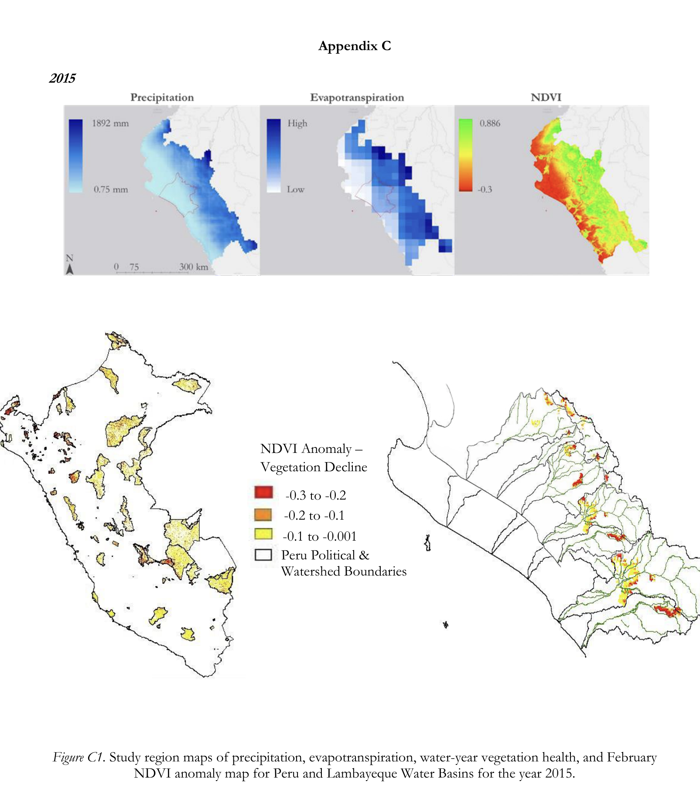
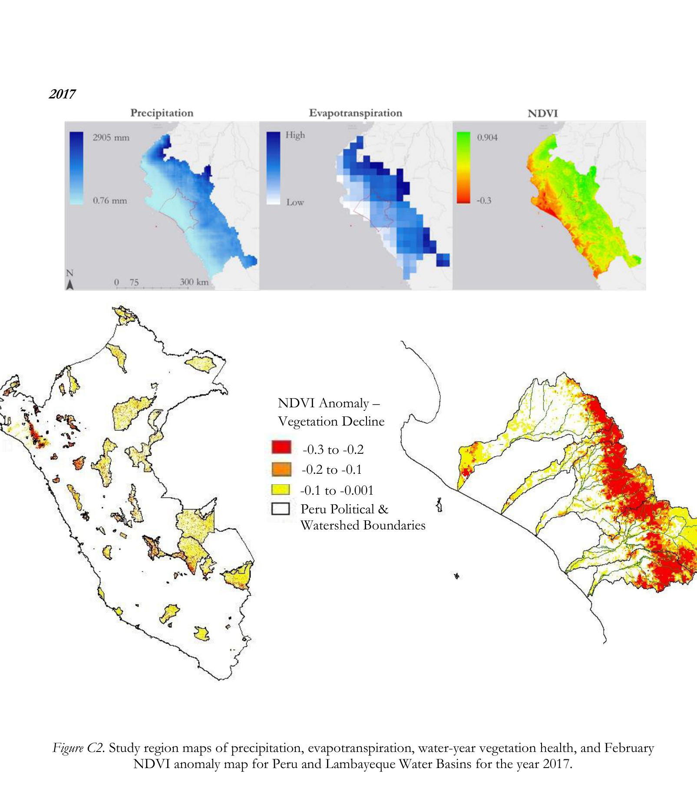
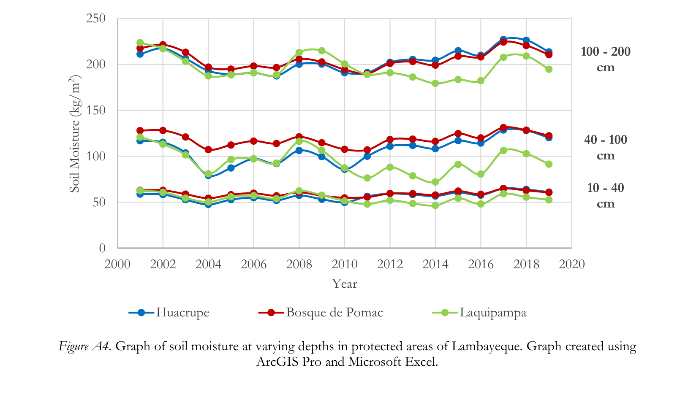
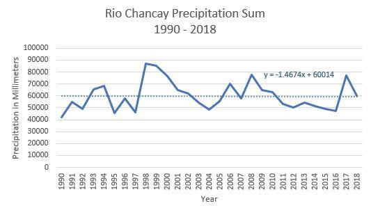

NASA DEVELOP · LAMBAYEQUE · PERU
Water Resources & Mesquite Forest Change
Exploring vegetation change and water availability in Lambayeque's mesquite forests.
01Project summaryResearch context
During NASA DEVELOP, I worked on a water-resources project in Lambayeque, Peru, examining how changing environmental conditions might relate to the decline of mesquite forests.
02MethodologyData processing and analysis
I helped build the NASA data extraction and preprocessing workflow, preparing satellite and environmental observations for ArcGIS Pro analysis. This shared approach involved automating acquisition and processing of Earth-observation datasets. I also contributed to a time-series analysis of NDVI, precipitation, and soil moisture to examine how changes in water availability coincided with vegetation conditions.
03Figures4 gallery items · 5 original figures
Original NASA DEVELOP maps and time-series figures examining precipitation, evapotranspiration, soil moisture and vegetation condition in Lambayeque. Use the draggable divider to compare the 2015 and 2017 maps; the subsequent charts examine water-cycle variability over time. These are historical research outputs, not recreated results.





04Results and next stepsFindings and limitations
The team poster reports declining precipitation over the study period, improved vegetation condition during periods of higher precipitation, and watershed-specific patterns in soil moisture and evapotranspiration. These results do not establish that hydrology alone caused mesquite mortality. The presentation also notes incomplete temporal coverage, coarse-resolution mixed pixels, and differences between NDVI patterns and local partner observations.
Project source materials: Team poster · Team presentation · NASA technical report · Project reflections
Additional original research outputs may be added as they become available.